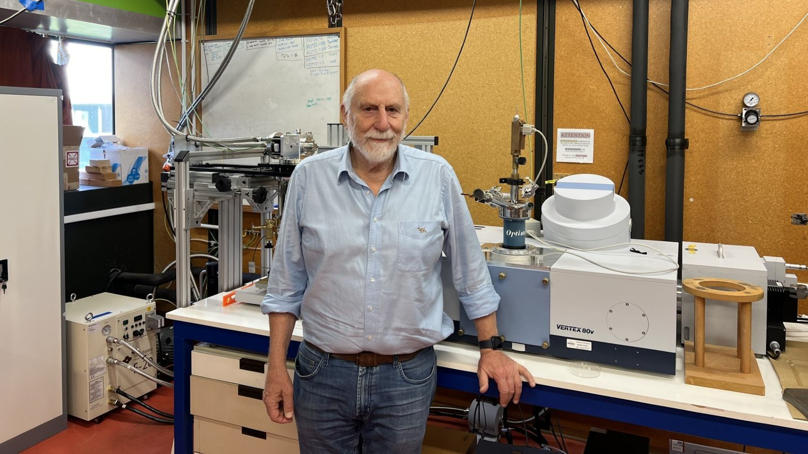

In scientific discovery, Artificial Intelligence (AI) is emerging as a new way to perceive and interpret the vast ocean of data that traditional methods might miss or misinterpret. Sofie Claridge's PhD research applies this transformative capability of AI to the phenomenon known as "quenching" in high-temperature superconducting (HTS) magnets.
Celebrating excellence — Emeritus Professor Bob Buckley
3 May, Victoria University

Throughout his career in material sciences, Emeritus Professor Buckley has focused on studying the behaviour of solid materials including semiconductors, sea ice, magnetic systems, and high-temperature superconductors (HTS). His research examines how these materials conduct electricity without resistance, their optical properties, and their responses to different temperatures.
Engineers and scientists at Victoria University’s Paihau-Robinson Research Institute are currently building a technology demonstration payload that will launch to the International Space Station (ISS) in 2025. The mission is named Hēki - te reo Māori for “egg” - and will be housed on the ISS’ NanoRacks External Platform. Hēki will demonstrate that a High-Temperature Superconducting magnet and its wireless inductive power supply (called a “flux pump”) can survive the journey to space and operate for long durations there. The payload will be returned to Paihau-Robinson for post-flight characterisation at the end of its time in space.
Visit by Professor John Durrell
19 April, Robinson Research Institute
It was our pleasure to host a week-long visit by Professor John Durrell (centre) from the Bulk Superconductivity Group at the University of Cambridge, to share research and identify new opportunities for collaboration.
Atif Islam's pursuit of a PhD in materials engineering at Paihau—Robinson Research Institute exemplifies resilience and passion. Atif's doctoral research focuses on developing an innovative voltage-tuneable magnetoresistive sensor for non-destructive testing of critical infrastructure.
Comprising a diverse and committed team of scientists and engineers, the Institute aims to apply cutting-edge research findings and advanced engineering to innovative technologies. An example of this work is the homopolar superconducting electric motor that has been designed, built and tested at the Institute.